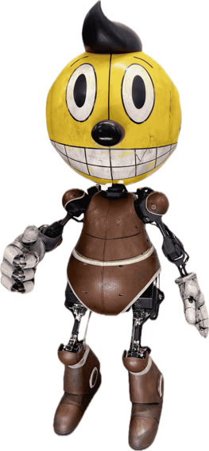
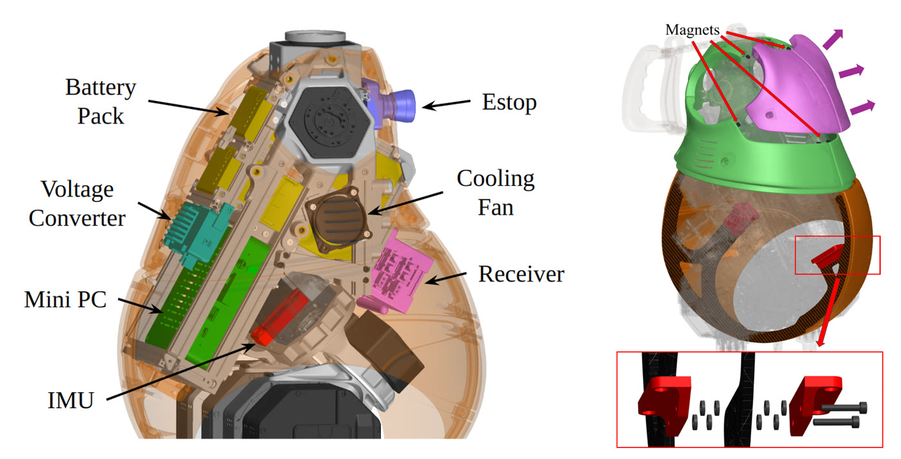
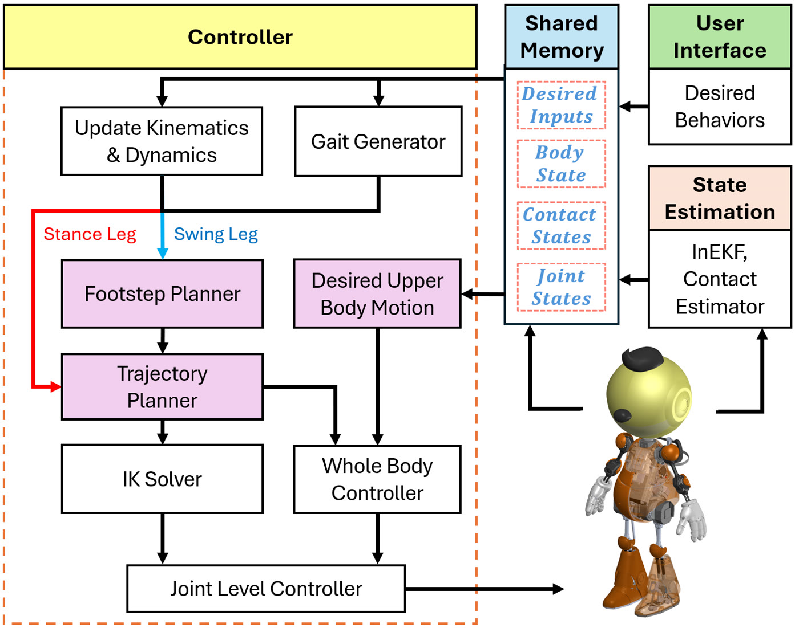

Humanoids · 2024–2025
Kid COSMO
Bringing a movie character to life through mechanical design, torque-controlled walking, and expressive full-body motion.
Overview
Kid COSMO is a child-sized humanoid developed at UCLA RoMeLa to bring the character from Netflix’s The Electric State into the physical world. The visual design was defined by the film, so the engineering challenge was to fit a working humanoid inside a distinctive character while preserving its proportions and mannerisms.
Our team developed the robot within a year for the film’s March 2025 premiere. My work focused on integrating the torso hardware and developing a locomotion framework that supports dynamic walking alongside expressive upper-body gestures.
Torso design and integration; locomotion framework for coordinated walking and upper-body motion.
Engineering within a character
The character’s irregular shell geometry shaped the mechanical design. Electronics, actuators, and structural components had to share a constrained volume while leaving enough joint motion for walking and performance. Packaging and appearance therefore had to be considered together throughout development.
The resulting platform combines torque-controlled lower-body motion with articulated upper-body gestures. This lets the physical robot communicate through movement while retaining the recognizable form of its on-screen counterpart.
- 1.3 m tall and 24.5 kg total mass.
- 18 quasi-direct-drive actuators on the limbs.
- 10 micro DC motors for the hands and wrists.
- Two custom 24 V batteries and an onboard mini PC.

Torso integration and serviceability
I designed the torso, which houses most of the robot’s electronics. The limited, irregular internal space made dense packaging, access for maintenance, and impact mitigation central design considerations.
A quick-detachable front cover provides access for battery swaps. Carbon-fiber plates and rubber washers introduce structural compliance and improve impact absorption. These details balance the character’s appearance with the practical demands of repeated operation and servicing.

Walking with upper-body motion
I developed the locomotion framework for dynamic walking with coordinated upper-body movement. A contact-aided Invariant Extended Kalman Filter estimates the robot state, while a contact-based gait generator coordinates stance and swing timing.
The footstep planner and swing trajectory generator determine touchdown locations and smooth foot motions. Inverse kinematics and a whole-body controller track the foot, center-of-mass, and upper-body trajectories, producing joint commands executed through PD control with feedforward torque.

Physical validation
The controller was exercised through balance tests, walking demonstrations, and upper-body gestures performed while seated or moving. These tests examine the interaction between expressive motion and lower-body stability, an essential requirement for a humanoid designed to perform as a character.
Related publications
- From Screen to Stage: Kid Cosmo, A Life-Like, Torque-Controlled Humanoid for Entertainment Robotics
IEEE-RAS International Conference on Humanoid Robots (Humanoids), 2025